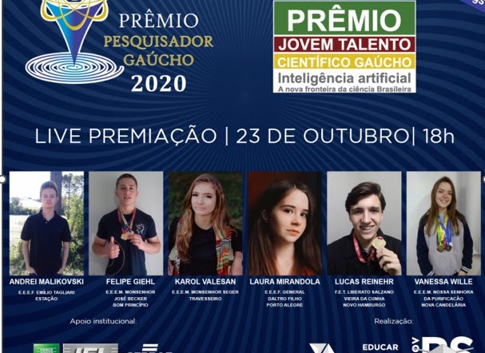
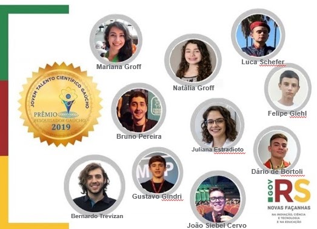
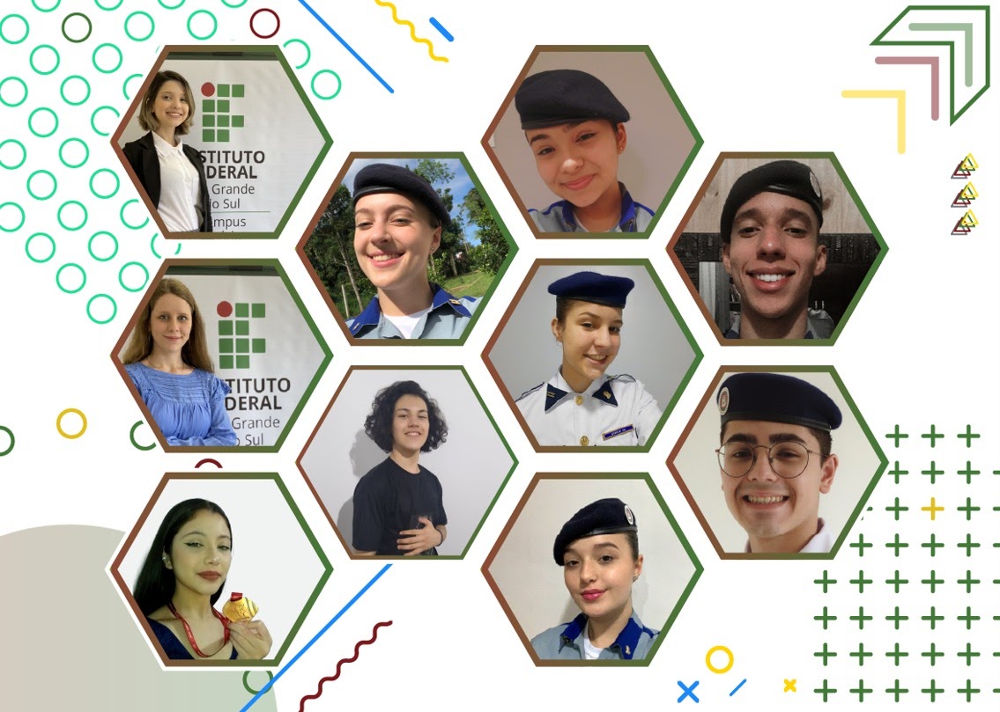
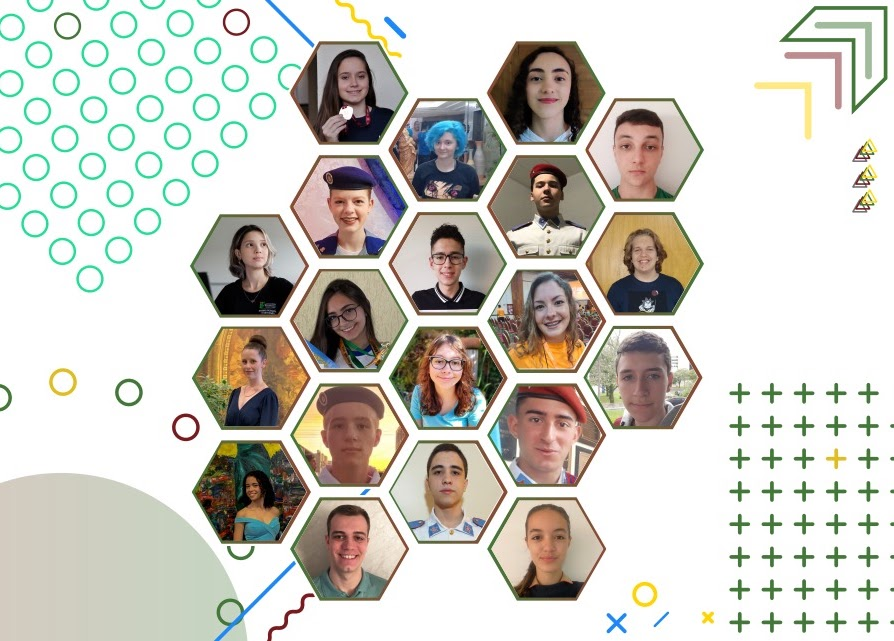
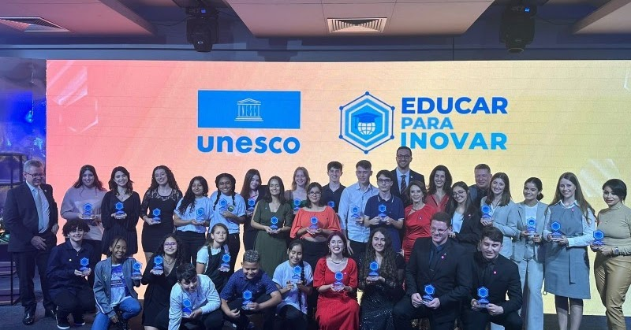
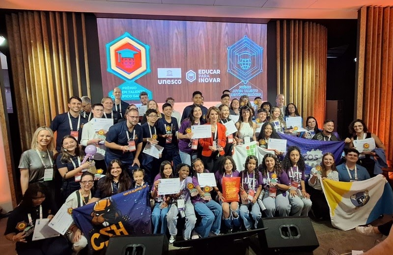

FAPERGS
Prêmio Jovem Talento Científico Gaúcho
Criado em 2019, o prêmio reconhece estudantes de escolas públicas que conquistaram medalhas e menções honrosas em eventos de conhecimento nacionais e internacionais, em Feiras de Ciência e Olimpíadas Científicas.

Sobre o prêmio
Reconhecimento para jovens que já se destacam na ciência
O Prêmio Jovem Talento Científico Gaúcho , criado em 2019, objetiva reconhecer estudantes de escolas públicas que conquistaram medalhas e menções honrosas em eventos de conhecimento nacionais e internacionais em Feiras de Ciência e Olimpíadas Científicas, estimulando a cultura da ciência e a carreira científica dos futuros profissionais.
A distinção foi uma proposta do Movimento Meninas Olímpicas como a realização do Programa Educar para Inovar , vinculado à SICT em parceria com a SEDUC .
Movimento Meninas Olímpicas
Participação na construção da iniciativa de reconhecimento aos jovens talentos científicos.
Educar para Inovar
Programa ao qual a realização da distinção está vinculada.
SICT e SEDUC
Articulação entre ciência, inovação e educação pública no Rio Grande do Sul.
Lançamento do prêmio
Prêmio Pesquisador Gaúcho 2021 e Prêmio Jovem Talento Científico Gaúcho
O lançamento reuniu a apresentação do Prêmio Pesquisador Gaúcho e do Prêmio Jovem Talento Científico Gaúcho.
Assistir ao lançamento
Histórico
Edições do Prêmio Jovem Talento Científico Gaúcho
Registros das edições reunidos em uma única linha do tempo visual.

2019
Prêmio Jovem Talento Científico Gaúcho
Primeira edição do prêmio.
2020
Prêmio Jovem Talento Científico Gaúcho
Reconhecimento aos jovens talentos científicos gaúchos.

2021
Prêmio Jovem Talento Científico Gaúcho
Edição vinculada às ações de ciência, inovação e educação.

2022
Prêmio Jovem Talento Científico Gaúcho
Premiação de pesquisadores e estudantes de escolas públicas.

2023
Prêmio Jovem Talento Científico Gaúcho
Governo do Estado premia pesquisadores e jovens talentos gaúchos.

2025
Prêmio Jovem Talento Científico Gaúcho
Reconhecimento aos alunos de escolas públicas no South Summit Brazil.
Memória visual
Uma trajetória de reconhecimento desde 2019
As edições mostram a continuidade do prêmio e a presença de estudantes de escolas públicas em espaços de valorização da ciência e da inovação.
Meninas olímpicas de hoje serão as mulheres nos espaços de poder amanhã.
Desde 2016 incentivando as meninas olímpicas.